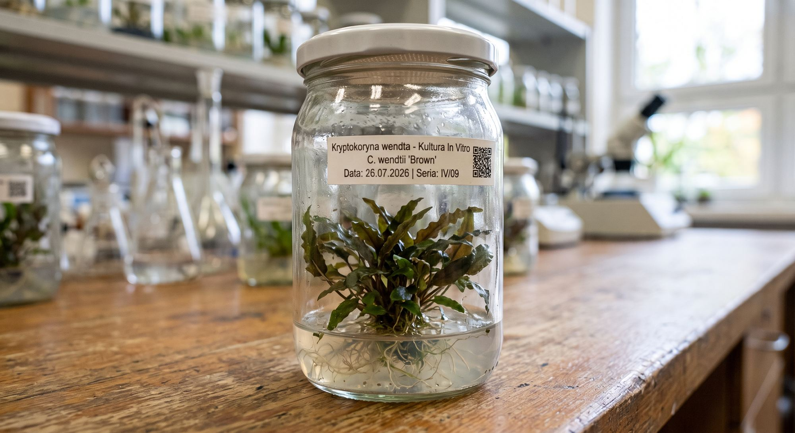

Zabezpieczenie odmiany
Kopia materiału poza polem i szklarnią, niezależna od pogody, choroby i jednego sezonu.

Przechowujemy odmiany prywatnych hodowców i plantatorów w kulturach in vitro. Jeśli choroba, mróz albo susza zabiorą uprawę, genotyp zostaje — i da się go namnożyć od nowa.
Napisz do nasKopia materiału poza polem i szklarnią, niezależna od pogody, choroby i jednego sezonu.
Namnażanie uruchamiamy wtedy, kiedy jest potrzebne. Nie musisz utrzymywać zapasu roślin przez cały rok.
Kulturę zakładamy z wierzchołka wzrostu — najmłodszej części pędu, w praktyce wolnej od wirusów i grzybów.
Każda roślina z depozytu jest genetycznie identyczna z mateczną. To samo dostajesz za rok i za dziesięć lat.
Kim jesteśmy
Kamino BioLabs to komercyjna część Nature & Future. Prowadzimy laboratorium kultur in vitro i bank genotypów dla klientów prywatnych: hodowców odmian, szkółek, sadowników i plantatorów.
Dobra odmiana to lata selekcji. Na polu wystarczy jedna choroba albo jeden przymrozek, żeby ją stracić. U nas ta sama odmiana rośnie równolegle w zamkniętym naczyniu — jako kopia, do której zawsze można wrócić.


Z Twojej rośliny matecznej pobieramy wierzchołek wzrostu — fragment wielkości kilku milimetrów.
Po odkażeniu tkanka trafia na sterylną pożywkę. Sprawdzamy, czy kultura jest czysta i stabilna.
Odmiana zostaje w banku. Co kilka tygodni przenosimy ją na świeżą pożywkę — tak długo, jak chcesz.
Na Twoje zlecenie namnażamy rośliny z depozytu i przygotowujemy je do wyjścia z naczynia do podłoża.
Nasza misja
Żadna dobra odmiana nie powinna zależeć od jednego pola.
Chcemy, żeby kopia zapasowa genotypu była dla hodowcy tak oczywista jak ubezpieczenie upraw: jedna decyzja, po której strata sezonu nie oznacza straty lat pracy.
Kontakt
Podaj gatunek i odmianę oraz to, czego potrzebujesz: sam depozyt, namnożenie czy jedno i drugie. Odpiszemy, czy i jak to u nas zrobimy.
Właśnie przyjmujemy pierwsze odmiany do banku. Z pierwszymi klientami ustalamy warunki depozytu indywidualnie — pod ich gatunek i skalę upraw.